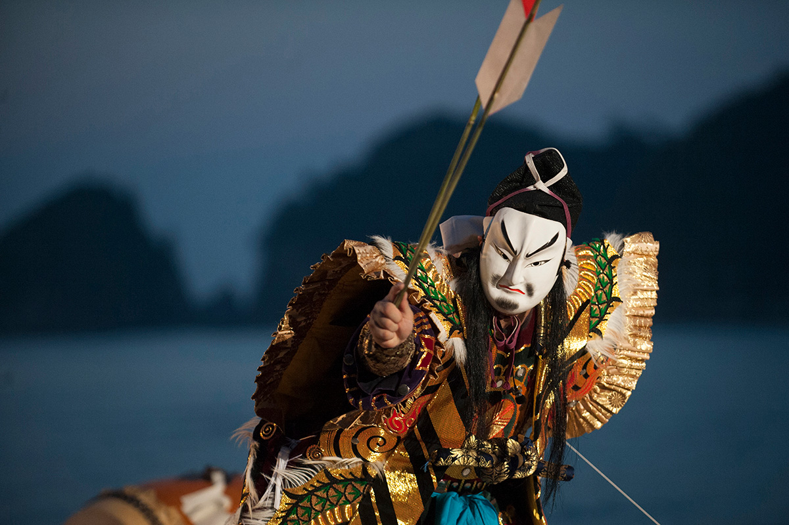
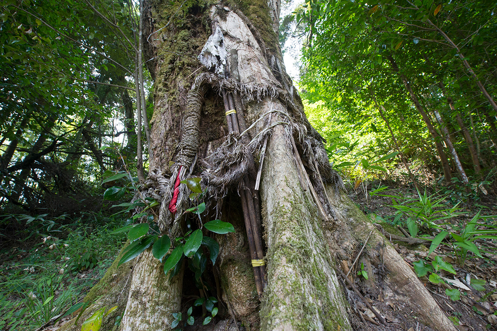
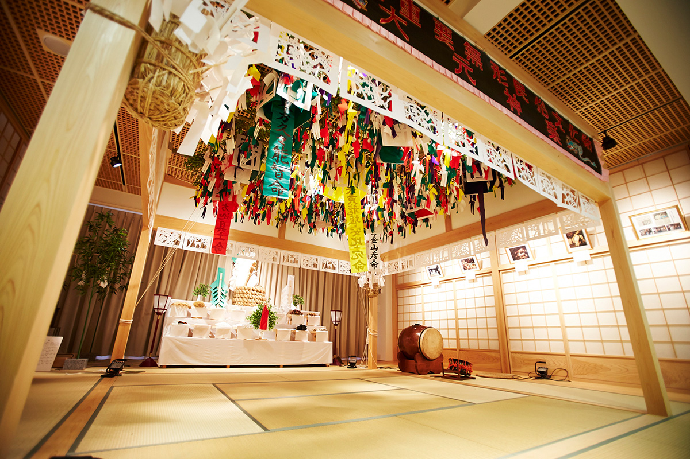
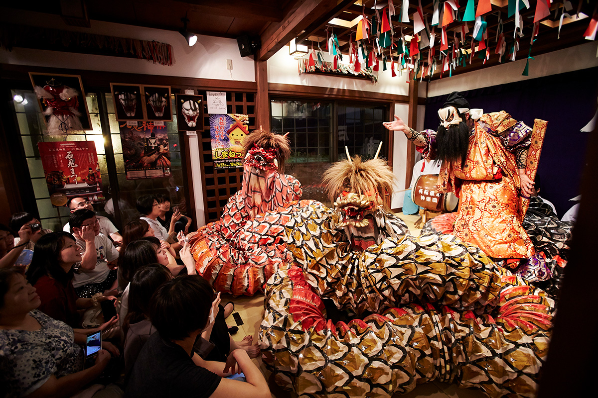
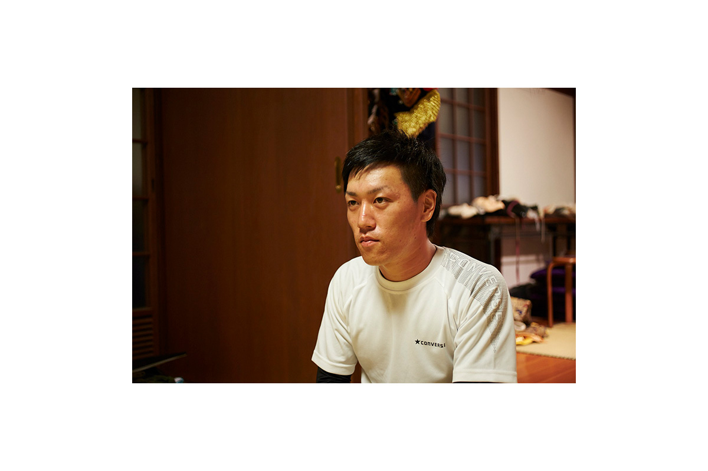
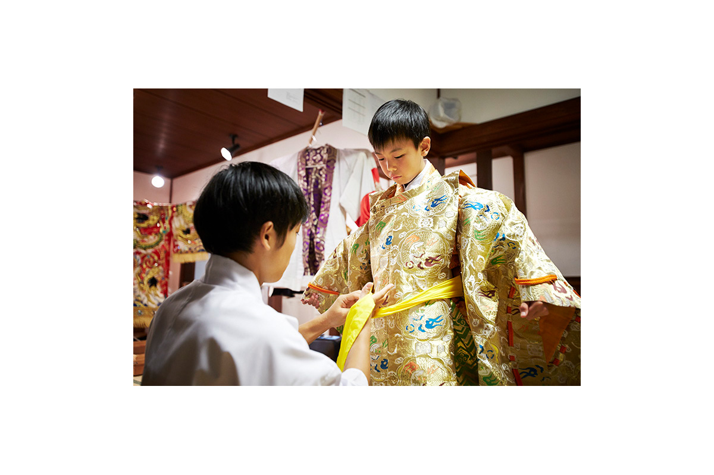
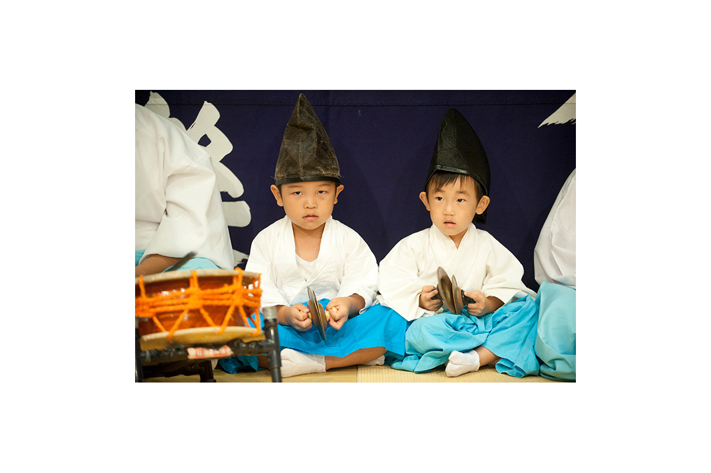
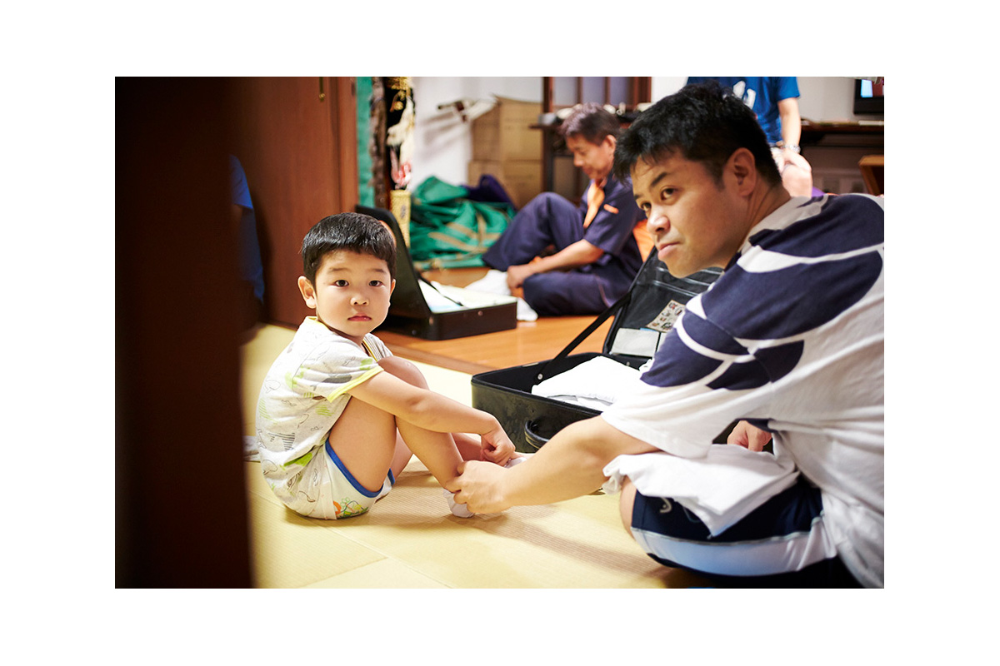

Префектура Симанэ · Гоцу · традиции
Ивами-кагура: священные танцы с масками и где их увидеть в Симанэ

Священные танцы кагура исполняют по всей Японии, но в каждом краю они свои. На западе префектуры Симанэ, в землях Ивами, кагура стала страстью целого региона: здесь больше 130 трупп, и на их представления съезжаются со всей страны.
Основы
Танец, к которому спускаются боги
Слово «кагура», как считается, выросло из «камикура», «сиденья богов». Так называли место или предмет, куда может снизойти божество: скалу, дерево, человека, священный жезл с бумажными лентами, колокольчик или ветку сакаки. Обряды, которыми богов встречали у таких мест, со временем и стали называть кагура.
Ивами это историческая область на западе нынешней префектуры Симанэ. Кагура здесь бывает очень разной: от неспешных ночных обрядов в горных деревнях до ярких спектаклей с драконами и демонами. Чтобы увидеть обе стороны, стоит заехать в два места в окрестностях города Гоцу.
Истоки
Омото-кагура: ночь для бога-хранителя
В посёлке Сакураэ, горной части Гоцу, сохранилась Омото-кагура. Государство признало её важным нематериальным народным культурным достоянием. Она выросла из культа Омото, который издавна был распространён на западе Симанэ. Люди благодарили бога, дающего урожай, и особенно чтили его в деревнях, живущих землёй и лесом. Как рассказал заместитель председателя общества по сохранению Омото-кагура, есть записи о том, что уже в эпоху Эдо (1603–1868) обряд проводили в нынешнем виде.

Омото-кагура проходит не каждый год, а раз в несколько лет, в особый «год кагура». Её танцуют поздней осенью, когда урожай уже убран, и действо длится всю ночь.
«Перед танцами мы идём к старому дереву, в котором живёт сам Омото. Бога приглашают в соломенного змея и несут в танцевальный зал: это обряд „Камимукаэ“, встреча бога. Затем танцоры в одеждах разных цветов очищают четыре стороны зала в танце „Сихогатамэ“, а обряд „Киёюдатэ“ очищает всё место кагура. Пышных костюмов, как в привычной Ивами-кагура, здесь не надевают. В конце идёт „Камиокури“: змея относят обратно к дереву и привязывают, чтобы бог спокойно отдыхал до следующего года кагура»
заместитель председателя общества по сохранению Омото-кагура

Это обряд для местного бога, и чужие видели его редко. Но Омото-кагура выходит и за пределы префектуры: её программу под названием «Ивами Омото-кагура» уже показывали на фестивале народных искусств в Национальном театре в Токио.
Сакураэ лежит в горах, и здесь сохранилась старинная манера танца. В конце эпохи Эдо и в эпоху Мэйдзи (1868–1912) на западе Ивами появился новый стиль кагура с быстрым ритмом. Его называют «хаттёси», «восемь тонов», а старую неторопливую кагуру, вроде Омото, называют «рокутёси», «шесть тонов». В Сакураэ танцуют низко присев, медленно и весомо, и в движениях легко узнать жесты крестьянской работы.
Дом Омото-кагура (Омото-кагура Дэнсёкан)
- Адрес
- префектура Симанэ, Гоцу, Сакураэ, Итияма, 481
- Телефон
- +81 855-92-1508
- Часы работы
- 9:00–16:00
- Выходные
- суббота, воскресенье
- Цены / Вход
- бесплатно
Где смотреть
Онсэн Арифуку: драконы на расстоянии вытянутой руки
Онсэн Арифуку находится в том же Гоцу, чуть западнее центра префектуры. По преданию, источник нашёл в горной глуши отшельник Ходо, пришедший из Индии в эпоху Асука (VI–VII века). В деревянном зале «Юномати кагурадэн» посреди городка по субботам вечером проходят спектакли местных трупп. Сцена стоит почти вплотную к зрителям, и вся мощь Ивами-кагура оказывается прямо перед глазами.

Под лёгкую музыку флейт и барабанов выходит танцор в роскошном костюме, расшитом золотой и серебряной нитью, в выразительной маске. Это Юя Тикасигэ, внук основателя труппы. Он начал ещё в детской труппе кагура и выступает больше двадцати лет.

«Труппу кагура онсэна Арифуку основал в 1967 году мой дед, её первый руководитель. Хотели оживить курортный городок и сделать сцену с Ивами-кагура для приезжих. Отец до сих пор выступает, а я танцую с самого детства, и для меня кагура часть жизни. Мне всегда было весело этим заниматься»
Юя Тикасигэ
За все эти годы ему ни разу не захотелось бросить. Его сын уже выходит на сцену и отбивает ритм ладонями, так что на одних подмостках играют сразу несколько поколений семьи. Нынешний руководитель труппы объясняет, почему кагура живёт так долго.
«Для слов и движений каждого сюжета есть учебник, своего рода сценарий. Но с каждым поколением и танец, и постановка понемногу меняются. Мы не отвергаем перемен: сохраняем старое и добавляем новое. Поэтому труппа и передаётся из поколения в поколение»
руководитель труппы


Истоки Ивами-кагура ведут к мифу о небесной пещере. Богиня солнца Аматэрасу укрылась в скальной пещере. Чтобы выманить её, богиня Амэ-но Удзумэ пустилась в пляс у входа, и этот танец считают началом кагура. Сегодня в репертуаре много сюжетов, в том числе по «Кодзики» (712) и «Нихон сёки» (720), древнейшим японским хроникам, а размах постановок давно вырос.
Ивами-кагура остаётся священным обрядом, но в ней много зрелища, а сюжеты понятны с первого взгляда. Боги, демоны и огромные змеи кружатся под стремительную музыку так, как танцуют только в Ивами.

«Юномати кагурадэн», онсэн Арифуку
- Адрес
- префектура Симанэ, Гоцу, Арифуку-онсэн, 694
- Телефон
- +81 855-56-2277 (туристический центр онсэна Арифуку)
- Сайт
- gotsu-kanko.jp
Фото: Эверетт Браун, Кэндзи Окадзаки.